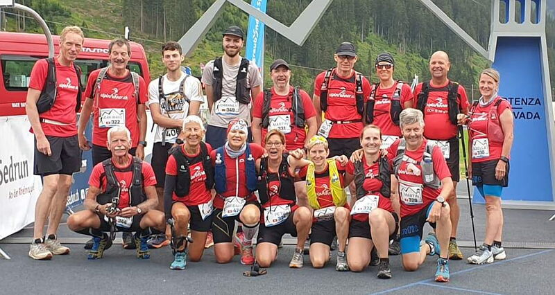

Alpinrunner
Rheinquelle Trail

Im Team Alpinrunner dabei sein. zwei Strecken sind zur Auswahl:
42,2 Km 3000 hm Marathon / 18,0 Km 1200 hm Tgom Trail zur Rangliste
Podesplätze der Alpinrunner: > Frauen Grandmaster 1. Barbara Miller / 3. Maria Conrad
> Frauen Master 3. Brigitte Eggerling / Männer Grandmaster 1. Marco Jäger
Wir waren gemeinsam beim Start, der Teamspirit spornt uns an -
wir waren dabei
- Michel Calonder 42,2 Km Marathon
- Fabian Rüfenacht 42,2 Km Marathon
- Marco Jäger 18 Km Tgom Trail
- Jean-Marie Zogg 18 Km Tgom Trail
- Petra Jäger 18 Km Tgom Trail
- Maria Conrad 18 Km Tgom Trail
- Robert Conrad 18 Km Tgom Trail
- Isabella Lüönd 18 Km Tgom Trail
- Martin Lüönd 18 Km Tgom Trail
- Karharina Fodor 18 Km Tgom Trail
- Rolf Bianco18 Km Tgom Trail
- Iris Capatt 18 Km Tgom Trail
- Matin Ledermann 18 Km Tgom Trail
- Brigitte Eggerling 18 Km Tgom Trail
- Ruedi Wirz 18 Km Tgom Trail
- Leon Carl 18 Km Tgom Trail
- Johannes Kleiber 18 Km Tgom Trail